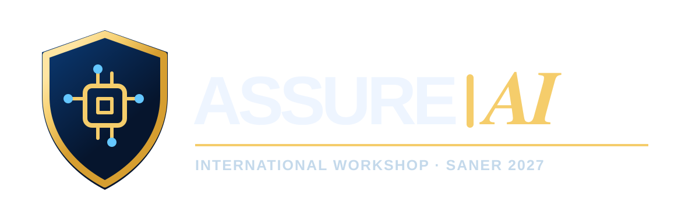

Karim Elish
Florida Polytechnic University, USA
Organizing Chair
Co-located with SANER 2027 · 34th IEEE International Conference on Software Analysis, Evolution and Reengineering

International Workshop on Security Assurance for AI-Assisted Software Engineering
AI-assisted software engineering is becoming integral to software analysis, evolution, maintenance, and reengineering. Developers increasingly rely on coding assistants and agentic tools to inspect code, review pull requests, generate patches, repair defects, refactor systems, update dependencies, write tests, and explain vulnerabilities. While these tools can improve productivity, they can also introduce vulnerabilities, produce incomplete fixes, or create unwarranted confidence in insecure software.
ASSURE-AI advances security assurance for AI-assisted software engineering by examining the evidence, methods, and validation processes needed to determine whether AI-generated or AI-modified software is ready for review, integration, or deployment. The workshop welcomes research and experience on vulnerability analysis, code review, patch validation, regression analysis, security testing, provenance, auditability, compliance, benchmarks, datasets, and human-in-the-loop validation across both agentic and non-agentic AI tools.
Productivity gains from AI-assisted development do not, by themselves, establish that the resulting software is secure or ready for deployment. ASSURE-AI addresses this gap by focusing on security claims supported by concrete evidence, such as static and dynamic analysis, security testing, manual review, compliance mappings, repository history, and reproducible benchmarks.
A key concern is false assurance: situations in which an AI tool, agent, review assistant, benchmark result, or explanation gives developers unwarranted confidence that software is secure without sufficient supporting evidence.
We welcome submissions on topics including, but not limited to:
ASSURE-AI solicits original submissions that advance research and practice in security assurance for AI-assisted software engineering. We welcome research contributions, short and position papers, tool and dataset papers, benchmark papers, and industry experience reports.
| Submission Type | Page Limit | Scope |
|---|---|---|
| Full papers | Up to 8 pages | Original research on security assurance for AI-assisted software engineering |
| Short and position papers | Up to 4 pages | Early results, focused empirical studies, emerging ideas, and research agendas |
| Tool, dataset, and benchmark papers | Up to 4 pages | Tools, datasets, evaluation frameworks, benchmarks, and replication packages |
| Industry experience reports | Up to 4 pages | Practical experiences with validating AI-generated or AI-modified software changes |
All submissions must be written in English and submitted in PDF format. Submissions must follow the official SANER workshop submission instructions and IEEE conference proceedings format. Full papers may be up to 8 pages. All other submission types may be up to 4 pages. Page limits exclude references unless otherwise specified by the official SANER workshop instructions.
Submissions must be original and not under review elsewhere. Each submission will be reviewed by at least three program committee members and evaluated for relevance, clarity, novelty, technical quality, and potential to stimulate workshop discussion.
Accepted papers are expected to be included in the SANER companion proceedings, following the official SANER workshop requirements.
All deadlines are AoE (UTC-12h), unless otherwise stated by SANER.
ASSURE-AI is planned as a full-day interactive workshop. The program will combine invited and peer-reviewed content with structured discussions to encourage community building around evidence-based security assurance for AI-assisted software engineering.
Florida Polytechnic University, USA
Organizing Chair

King Fahd University of Petroleum and Minerals, Saudi Arabia
Organizing Co-chair
& Proceedings Chair

University of Wollongong, Australia
Steering Committee Member

University of Central Florida, USA
Steering Committee Member

King Fahd University of Petroleum and Minerals, Saudi Arabia
Steering Committee Member

IBM Research, USA
Organizing Co-chair
The program committee will include researchers and practitioners with expertise in software engineering, software security, software analysis, software evolution, empirical software engineering, AI-assisted development, and industry practice. Confirmed program committee members will be listed here after invitations are completed.
For questions about ASSURE-AI, please contact: kelish@floridapoly.edu.
This preliminary website is intended for the workshop proposal stage. If the workshop is accepted, this site will be updated with the official SANER 2027 workshop information, submission link, final deadlines, program committee, and program schedule.